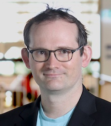

About Me
Publications (Feel Free to Email Me for a Copy)
Book Chapters
- James Noble, Alex Potanin, Toby Murray, Mark
S. Miller. Abstract
and Concrete Data Types vs Object Capabilities. In
P. Müller and Ina Schaefer (Eds.): Principled Software
Development - Essays Dedicated to Arnd Poetzsch-Heffter on the
Occasion of his 60th Birthday. Springer,
Heidelberg. 2018.
- Alex Potanin, Johan Ostlund, Yoav Zibin, Michael D. Ernst.
Immutability.
In D. Clarke et
al. (Eds.): Aliasing
in Object-Oriented Programming, LNCS 7850,
pp. 233-269. Springer, Heidelberg. 2013.
Journal Papers
- Tobias Runge, Tabea Bordis, Alex Potanin, Thomas Thum, Ina
Schaefer. Flexible
Correct-by-Construction Programming. Logical Methods
in Computer Science (Accepted in April 2023).
- Tobias Runge, Marco Servetto, Alex Potanin, Ina
Schaefer. Immutability
and Encapsulation for Sound OO Information Flow
Control. TOPLAS (Accepted in October 2022).
- Isaac Oscar Gariano, Marco Servetto, Alex
Potanin. Using
Capabilities for Strict Runtime Invariant Checking.
SCP (Accepted in September 2022).
- Darya Melicher, Anlun Xu, Valerie Zhao, Alex Potanin,
Jonathan
Aldrich. Bounded
Abstract Effects. TOPLAS, Volume 44, Issue 1, March
2022.
- Isaac Oscar Gariano, Marco Servetto, Alex Potanin, Hrshikesh
Arora. Iteratively Composing Statically Verified Traits.
VPT-2019 Post-Proceedings as a volume
of Electronic
Proceedings in Theoretical Computer Science
(EPTCS). Issue
299, Paper 7.
- Chris Male, David Pearce, Alex Potanin, and Constantine Dymnikov.
Formalisation
and Implementation of an Algorithm for Bytecode Verification of
@NonNull
Types. Science
of Computer Programming. Volume 76, Issue 7, Pages 587 - 608,
July 2011.
- Alex Potanin, James Noble, Dave Clarke, and Robert Biddle.
Featherweight
Generic Confinement.
Journal of Functional Programming.
Volume 16, Number 6, Pages 793 - 811, September 2006.
- Alex Potanin, James Noble, Marcus Frean, and Robert Biddle.
Scale-free
Geometry in Object-Oriented Programs.
Communications of the ACM.
Pages 99 - 103. May
2005. (ACM
Link)
- Alex Potanin, James Noble, and Robert Biddle.
Checking
Ownership and Confinement.
Concurrency and Computation: Practice and Experience.
Volume 16, Issue 7, Pages 671 - 687, 2004.
Refereed Conference Papers
- Tobias Runge, Alexander Kittelmann, Marco Servetto, Alex
Potanin, and Ina
Schaefer. Information
Flow Control-by-Construction for an Object-Oriented
Language. In proceedings of SEFM 2022.
- Tobias Runge, Alex Potanin, Thomas Thum, and Ina
Schaefer. Traits:
Correctness-by-Construction for Free. In proceedings
of FORTE 2022. Won FORTE 2022 Best Paper award.
- Manish Singh, Lindsay Groves, and Alex
Potanin. A
Relaxed Balanced Lock-free Binary Tree. In proceedings
of PDCAT 2020.
- Julian Mackay, Alex Potanin, Jonathan Aldrich, and Lindsay
Groves. Syntactically
Restricting Bounded Polymorphism for Decidable Subtyping.
In proceedings of APLAS2020.
- Julian Mackay, Alex Potanin, Jonathan Aldrich, and Lindsay
Groves. Decidable
Subtyping for Path Dependent Types. In proceedings of
POPL2020. Additionally, the artifact successfully passed the
Artifact Evaluation and was given Reusable Artifact
badge.
- Aaron Craig, Alex Potanin, Lindsay Groves and Jonathan
Aldrich. Capabilities:
Effects for Free. In proceedings of ICFEM2018. Pp
231-247. Springer.
- Jens Dietrich, Kamil Jezek, Shawn Rasheed, Amjed Tahir, Alex
Potanin. EvilPickles:
DoS attacks based on Object-Graph Engineering. In
proceedings of ECOOP2017. Additionally, the artifact
successfully passed the Artifact Evaluation. This paper won
ECOOP 2017 Distinguished Artifact Award.
- Darya Melicher, Yangqingwei Shi, Alex Potanin, Jonathan
Aldrich. A
Capability-Based Module System for Authority Control. In
proceedings of ECOOP2017. Additionally, the artifact
successfully passed the Artifact Evaluation.
- Garming Sam, Nicholas Cameron and Alex
Potanin. Automated
Refactoring of Rust Programs. Article No.: 14. In
proceedings
of ACSC2017.
- Joseph Lee, Jonathan Aldrich, Troy Shaw, Alex
Potanin. A
Theory of Tagged Objects. In proceedings of
ECOOP2015. Pp 999-1026. Additionally, the artifact on
the software section of my home page
successfully passed the Artifact Evaluation.
- Cyrus Omar, Darya Kurilova, Ligia Nistor, Benjamin Chung, Alex
Potanin, and Jonathan
Aldrich. Safely
Composable Type-Specific Languages. In proceedings of
ECOOP2014. Pp 105-130. Springer-Verlag. This paper won ECOOP
2014 Distinguished Paper Award.
- Marco Servetto, Julian Mackay, Alex Potanin, and James
Noble. The
Billion-Dollar Fix: Safe Modular Circular Initialisation with
Placeholders and Placeholder Types. In proceedings of
ECOOP2013. Pp 205-229. Springer-Verlag.
- Constantine Dymnikov, David Pearce and Alex
Potanin. OwnKit:
Inferring Modularly Checkable Ownership Annotations for
Java. In proceedings of the Australasian Software
Engineering Conference (ASWEC) 2013. Pp 181-190. IEEE.
- Alex Potanin, Monique Damitio and James
Noble. Are
Your Incoming Aliases Really Necessary? Counting the Cost of
Object Ownership. In proceedings of the International
Conference on Software Engineering (ICSE) 2013. Pp
742-751. ACM/IEEE.
- Atkins, Alex Potanin and Lindsay
Groves. The
Design and Implementation of Clocked Variables in X10.
In proceedings of Australasian Computer Science Conference
(ACSC) 2013. Pp
87-96. CRPIT.
- Jan Larres, Alex Potanin and Yuichi
Hirose. A
Study of Performance Variations in the Mozilla Firefox Web
Browser. In proceedings of Australasian Computer Science
Conference (ACSC) 2013. Pp
3-12. CRPIT.
- Hien Tran, Craig Anslow, Stuart Marshall, Alex Potanin, Mairead
de
Roiste. Lessons
Learnt from Collaboratively Creating Maps on a Touch
Table. In proceedings of the 12th Annual Conference of the
New Zealand Chapter of the ACM Special Interest Group on
Computer-Human Interaction (CHINZ) 2011. Pp. 105-108. ACM
SIGCHI.
- Yoav Zibin, Alex Potanin, Paley Li, Mahmood Ali, Michael
D. Ernst.
Ownership
and Immutability in Generic Java. In proceedings of
Object-Oriented Programming, Systems, Languages, and Applications
(OOPSLA) 2010. Pp. 598-617. ACM.
- Radu Muschevici, Alex Potanin, Ewan Tempero, and James Noble.
Multiple
Dispatch in Practice. In proceedings of Object-Oriented
Programming, Systems, Languages, and Applications (OOPSLA)
2008. Pp. 563-582. ACM.
(ACM
Link)
- Chris Male, David Pearce, Alex Potanin, and Constantine Dymnikov.
Java
Bytecode Verification for @NonNull Types. In proceedings
of Compiler Construction (CC) 2008. Pp 229-244.
- Neil Ramsay, Stuart Marshall, and Alex Potanin.
Annotating
UI Architecture with Actual Use. In proceedings of
Australasian User Interface Conference
(AUIC) 2008. Pp. 75-78. CRPIT.
- Yoav Zibin, Alex Potanin, Mahmood Ali, Shay Artzi, Adam Kiezun,
and Michael D. Ernst.
Object
and Reference Immutability using Java Generics. In
proceedings of
the Foundations of
Software Engineering (FSE) Conference, Dubrovnik, Croatia,
September 2007. Pp. 75-84. ACM. (Won ESEC/FSE 2007 ACM SIGSOFT
Distinguished Paper Award.)
(ACM
Link)
- Alex Potanin, James Noble, Dave Clarke, and Robert Biddle.
Generic
Ownership for Generic Java. In proceedings of
the Object-Oriented Programming,
Systems, Languages and Applications (OOPSLA) Conference,
Portland, Oregon, October
2006. Pp. 311-324. ACM. (ACM
Link)
- Alex Potanin, James Noble, and Robert Biddle.
Snapshot
Query-Based Debugging. In proceedings of
the Australian
Software Engineering Conference, Melbourne, Australia, April
2004. Pp 251-261.
Refereed Workshop Papers
- Amos Robinson and Alex Potanin. Pipit: Reactive Systems
in F Star (Extended Abstract). In TyDe 2023.
- Baptiste Pauget, David Pearce, and Alex
Potanin. Towards
Compilation of an Imperative Language for FPGAs. In VMIL
2018.
- James Noble, Sophia Drossopoulou, Mark S Miller, Toby Murray and
Alex
Potanin. Abstract
Data Types in Object-Capability Systems. In IWACO
2016.
- Du Li, Alex Potanin, and Jonathan
Aldrich. Delegation
vs Inheritance for Typestate Analysis. In FTfJP 2015.
- Darya Kurilova, Alex Potanin, and Jonathan
Aldrich. Wyvern:
Impacting Software Security via Programming Language
Design. In PLATEAU 2014. Pages 57-58.
- James Noble and Alex
Potanin. On
Owners-as-Accessors. In IWACO 2014.
- Jonathan Aldrich, Cyrus Omar, Alex Potanin and Du
Li. Language-Based
Architectural Control. In IWACO 2014.
- Cyrus Omar, Benjamin Chung, Darya Kurilova, Alex Potanin and
Jonathan
Aldrich. Type-Directed,
Whitespace-Delimited Parsing for Embedded DSLs. In
proceedings of the First Workshop on the Globalization of Domain
Specific Languages (GlobalDSL) 2013. Pp 8-11.
- Ligia Nistor, Darya Kurilova, Stephanie Balzer, Benjamin Chung,
Alex Potanin and Jonathan
Aldrich. Wyvern:
A Simple, Typed, and Pure Object-Oriented Language. In
Proceedings of the 5th Workshop on MechAnisms for SPEcialization,
Generalization and inHeritance (MASPEGHI) 2013. Pp 9-16.
- Marco Servetto, David Pearce, Lindsay Groves, and Alex
Potanin. Balloon
Types for Safe Parallelisation over Arbitrary Object
Graphs. Workshop on Determinism and Correctness in
Parallel Programming (WoDeT) 2013.
- Atkins, Alex Potanin, Lindsay
Groves. Clocked
References in X10. Languages for the Multicore Era
(LaME) 2012.
- Julian Mackay, Hannes Mehnert, Alex Potanin, Lindsay Groves,
Nicholas
Cameron. Encoding
Featherweight Java with Assignment and Immutability using The Coq
Proof Assistant. In the proceedings of Formal Techniques
for Java-like Programs (FTfJP) 2012. Pp 11-19.
- Yoav Zibin, Alex Potanin, Paley Li, Mahmood Ali, Michael
D. Ernst.
Ownership and Immutability in Generic Java (OIGJ). IBM
Programming Languages and Development Environments Seminar 2010
(PLDE2010).
- Paley Li, Stephen Nelson, and Alex Potanin.
Ownership for
Relationships. International Workshop on Aliasing,
Confinement, and Ownership (IWACO) 2009. Article No. 8.
- Paley Li, Alex Potanin, James Noble, and Lindsay Groves.
Towards
Unifying Immutability and Ownership. International
Workshop on Aliasing, Confinement, and Ownership (IWACO) at
ECOOP2008.
- Christo Fogelberg, Alex Potanin, and James Noble.
Ownership
Meets Java. International Workshop on Aliasing,
Confinement, and Ownership (IWACO) at ECOOP2007.
- Alex Potanin, James Noble, Tian Zhao, Jan Vitek.
A High Integrity Profile for Memory Safe Programming in
Real-time Java. In proceedings of the 3rd workshop on Java
Technologies for Real-time and Embedded Systems, San Diego, CA,
USA, October 2005.
- Alex Potanin, James Noble, Dave Clarke, Robert Biddle.
Featherweight
Generic Ownership. In proceedings of the workshop on
Formal Techniques for Java-like Programs (FTfJP)
in European Conference for
Object-Oriented Programming, Glasgow, Scotland, July
2005.
- Alex Potanin, James Noble, Dave Clarke, Robert Biddle.
Defaulting
Generic Java to Ownership. In proceedings of the workshop
on Formal Techniques for Java-like Programs (FTfJP)
in European Conference for
Object-Oriented Programming, Oslo, Norway, June 2004.
- Alex Potanin, James Noble, Dave Clarke, and Robert Biddle.
Featherweight
Generic Confinement. In proceedings of
the International
Workshop on Foundations of Object-Oriented Languages (FOOL),
affiliated
with Symposium
on Principles of Programming Languages, Venice, Italy, January
2004.
- James Noble, Robert Biddle, Ewan Tempero, Alex Potanin, and Dave Clarke.
Towards
a Model of Encapsulation. In proceedings of the
International Workshop on Aliasing, Confinement and Ownership
(IWACO) in European Conference for
Object-Oriented Programming, Darmstadt, Germany, July
2003.
- Alex Potanin and James Noble.
Checking
Ownership and Confinement Properties. In proceedings of
the workshop on Formal Techniques for Java-like Programs (FTfJP)
in European Conference for
Object-Oriented Programming, Malaga, Spain, June 2002.
Edited Journals
- Alex Potanin and Gail Murphy
(Editors). Special
Issue on the 23rd Asia-Pacific Software Engineering Conference
(APSEC) 2016. Science of Computer Programming. Volume
163, 1 October 2018.
- Alex Potanin
(Editor). Special
Issue on New Object-Oriented Languages (NOOL) 2015.
Journal of Object Technology. Volume 16, no. 2 (April
2017).
- Taso Viglas and Alex Potanin
(Editors). Special
Issue on Computing: The Australasian Theory Symposium
2011. International Journal on Foundations of Computer
Science (IJFCS), 2013. Vol. No. 24, Issue No. 1.
- Taso Viglas and Alex Potanin
(Editors). Special
Issue on Computing: The Australasian Theory Symposium
2010. Chicago Journal of Theoretical Computer Science
(CJTCS), May 2011. Volume 2010.
Other Refereed Publications
- Manish Singh, Lindsay Groves, Alex Potanin. A Relaxed
Balanced Non-Blocking Binary Search Tree. Poster in
International Conference on Parallel Processing (ICPP)
2019.
- Isaac Oscar Gariano, Marco Servetto, Alex Potanin, Hrshikesh
Arora. Iteratively Composing Statically Verified Traits.
Extended Abstract at Seventh International Workshop on Verification
and Program Transformation (VPT 2019).
- Darya Melicher, Yangqingwei Shi, Valerie Zhao, Alex Potanin, and
Jonathan Aldrich. Using Object Capabilities and Effects to
Build an Authority-Safe Module System. Poster in HotSoS
2018.
- Aaron Craig, Alex Potanin, Lindsay Groves, Jonathan
Aldrich. Capabilities
and Effects. In OCAP 2017.
- Darya Melicher, Yangqingwei Shi, Valerie Zhao, Alex Potanin, and
Jonathan
Aldrich. Using
Object Capabilities and Effects to Build an Authority-Safe Module
System. In OCAP 2017.
- Jonathan Aldrich and Alex Potanin. Usably Expressing and
Enforcing Design in Wyvern. In NOOL 2017.
- Jens Dietrich, Kamil Jezek, Shawn Rasheed, Amjed Tahir, Alex
Potanin. EvilPickles: DoS attacks based on Object-Graph
Engineering (Artifact). In DARTS.
- Darya Melicher, Yangqingwei Shi, Alex Potanin, Jonathan
Aldrich. A Capability-Based Module System for Authority Control
(Artifact). In DARTS.
- Jonathan Aldrich and Alex
Potanin. Delegation
Revisited. NOOL 2016.
- Jonathan Aldrich and Alex Potanin. Naturally Embedded
DSLs. DSLDI 2016.
- Darya Kurilova, Alex Potanin, and Jonathan Aldrich. Modules
in Wyvern: Advanced Control over Security and Privacy.
Poster in HotSOS 2016. See last
page here.
- Joseph Lee, Jonathan Aldrich, Troy Shaw, and Alex Potanin. A
Theory of Tagged Objects
(Artifact). DARTS,
Volume 1, Issue 1, 2015.
- Cyrus Omar, Darya Kurilova, Ligia Nistor, Benjamin Chung, Alex
Potanin, and Jonathan Aldrich. Safely Composable Type-Specific
Languages. Poster in ECOOP2014.
- Darya Kurilova, Cyrus Omar, Ligia Nistor, Benjamin Chung, Alex
Potanin, Jonathan Aldrich. Type-Specific Languages to Fight
Injection Attacks. Poster in HotSOS 2014.
- Cyrus Omar, Benjamin Chung, Darya Kurilova, Ligia Nistor, Alex
Potanin, Jonathan Aldrich. Extensible Type-Driven Parsing for
Embedded DSLs in Wyvern. Parsing@SLE 2013.
- Cyrus Omar, Benjamin Chung, Darya Kurilova, Ligia Nistor, Alex
Potanin, Jonathan Aldrich. Extensible Type-Driven Parsing for
Embedded DSLs in Wyvern. Poster in SPLASH2013.
- Jonathan Aldirch, Benjamin Chung, Darya Kurilova, Cyrus Omar,
Alex Potanin. DSL support in Wyvern Language. Domain
Specific Language Design and Implementation (DSLDI) 2013.
- Jan Larres, Alex Potanin, and Yuichi Hirose.
Performance Variance Evaluation on Mozilla Firefox. In the
proceedings of the NZCSRSC2011.
- Mairead de Roiste, Hien Tran, and Alex Potanin. What makes a
map? At Ireland Organisation for Geographic Information
Conference (IRLOGI) 2010.
- Chris Andreae, Donald Gordon, Alex Potanin, James Noble, Robert Biddle.
Terrier: Static Query-Based Debugging in Eclipse. Poster
in Conference on Object-Oriented
Programming, Systems, Languages, and Applications, Vancouver,
Canada, October 2004.
- Alex Potanin.
Generic Ownership:
Practical Ownership Control in Programming Languages. In
Doctoral Symposium Proceedings
of Conference on Object-Oriented
Programming, Systems, Languages, and Applications, Vancouver,
Canada, October 2004.
- Alex Potanin.
Practical
Ownership Control in Programming Languages. In Doctoral
Symposium Proceedings of European
Conference for Object-Oriented Programming, Oslo, Norway, June
2004.
- Alex Potanin.
A
Tool for Ownership and Confinement Analysis of the Java Object
Graph. Conference poster and student research
competition entry
in Object-Oriented
Programming Systems, Languages, and Applications
Conference, Seattle, USA, November 2002. The poster itself is
available in Microsoft PowerPoint
format here.
This entry was awarded a second place in the competition in
the graduate division, even though I was technically an
undergraduate. The results are
available here.
(Update: This entry was accepted into the ACM Student
Research Competition Grand Finals and can be found in HTML
format here.
It was awarded a second place overall in the undergraduate
category as can be
found here.)
Theses
- Alex Potanin.
Generic Ownership - A
Practical Approach to Ownership and Confinement in OO Programming
Languages. My PhD thesis, awarded in 2007.
- Alex Potanin.
The Fox - A Tool for
Object Graph Analysis. Honours report which resulted in
First Class Honours at Victoria
University of Wellington in 2002. My supervisors
were James
Noble
and Robert
Biddle. The PDFLaTeX source is
available here.
Patent Applications
- Software
Translation. US Patent filed in March 2008 and EU Patent EP2122464 filed in February 2008.
Technical Reports
- Aaron Craig, Alex Potanin, Lindsay Groves and Jonathan
Aldrich. Capabilities:
Effects for Free. ECSTR-18-02.
- Darya Melicher, Yangqingwei Shi, Alex Potanin, Jonathan
Aldrich. A
Capability-Based Module System for Authority
Control. CMU-ISR-TR-17-106.
- Cyrus Omar, Darya Kurilova, Ligia Nistor, Benjamin Chung, Alex
Potanin, and Jonathan
Aldrich. Safely
Composable Type-Specific Languages (Technical
Report). CMU-ISR-TR-14-106.
- Marco Servetto and Alex
Potanin. Balloon
Immutable Java ECS-TR-12-18.
- Marco Servetto and Alex
Potanin. Our
Billion Dollar Fix ECS-TR-12-19.
- Jan Larres, Alex Potanin, and Yuichi
Hirose. A
Study of Performance Variations in the Mozilla Firefox Web
Browser ECS-TR-12-14.
- Julian Mackay, Hannes Mehnert, Alex Potanin, Lindsay Groves,
Nicholas
Cameron. Featherweight
Java with Assignment and Immutability in Coq ECS-TR-12-11.
- Atkins, Alex Potanin, Lindsay
Groves. Clocked
References in X10 ECS-TR-12-11.
- Alex Potanin, Monique Damitio, Shane Markstrum, Christo
Fogelberg, Andrew Walbran, James
Noble. Are
Your Aliases Really Necessary? ECS-TR-11-06.
- Hannes Mehnert, Nicholas Cameron, Alex
Potanin. Relaxing
Ownership with Immutability ECS-TR-10-20.
- Yoav Zibin, Alex Potanin, Paley Li, Mahmood Ali, Michael
D. Ernst. Ownership
and Immutability Generic Java (OIGJ) with Owners as
Modifiers ECS-TR-10-15.
- Paley Li, Yoav Zibin, Alex Potanin, and Michael
D. Ernst. Featherweight
OIGJ Technical Report ECS-TR-10-16.
- Yoav Zibin, Alex Potanin, Shay Artzi, Adam Kiezun, and Michael
D. Ernst.
Object and
Reference Immutability using Java
Generics. MIT-CSAIL-TR-2007-018.
- Alex Potanin, Dave Clarke, James Noble, Robert Biddle.
Featherweight
Generic Ownership Technical Report. This TR gives full
details of the FGO type system with all the proofs for type
soundness and ownership invariants. A draft version appeared as a
discussion paper in FTfJP2005 workshop (please see above). ECS-TR-09-02.
Invited Talks and Others
- Hybrid
SPLASH 2021 Retrospective.
- Panel on Online Lectures. Invited Panel Member at ICFP
2020 Panel. (August, 2020)
- Wyvern Project Overview. Invited Local Visitor Talk at
IFIP WG 2.4. (April, 2019)
- Are Your Incoming Aliases Really Necessary? Counting the Cost
of Object Ownership. Invited Talk at the International Workshop on
Aliasing, Confinement, and Ownership (IWACO) 2017.
- Life in Academia after your PhD.
At PLMW
2015.
- Wyvern Formalisation. At NII Shonan Meeting 63 in 2015 on
Semantics
and Verification of Object-Oriented Languages. (21-25
September, 2015)
- Post PhD/Masters, what are your options? Invited panel
member at NZCSRSC 2010, Wellington, NZ. (13th of April,
2010)
- Young guns/object orientation: the next generation.
Invited panel member at OOPSLA 2006, Portland, Oregon,
USA. (October, 2006)